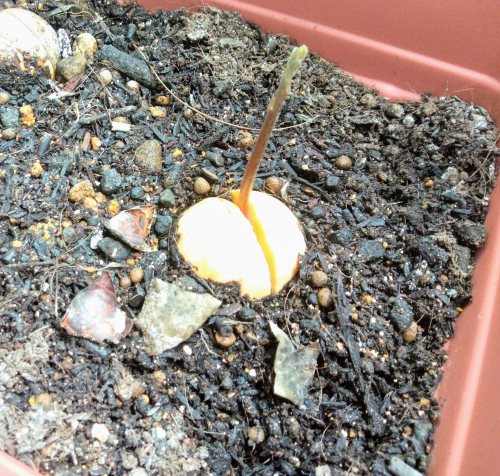
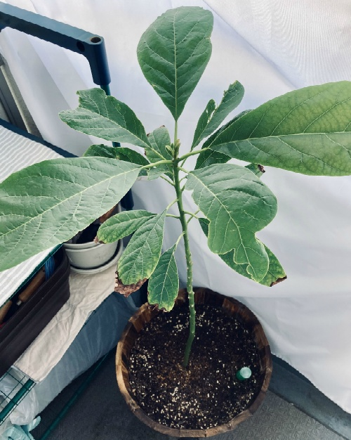
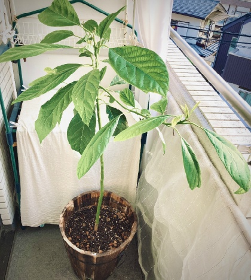
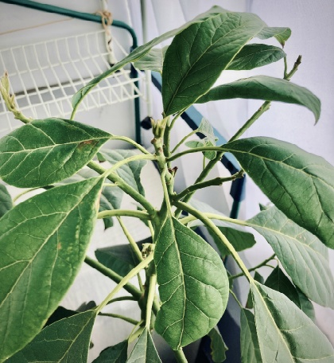
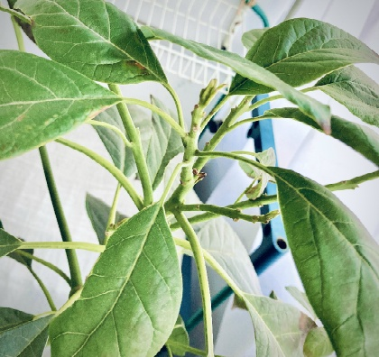

- 2021年01月16日 111.2cm
- 2020年12月16日 111.1cm
- 2020年11月15日 111.1cm
- 2020年10月22日 110.2cm
- 2020年10月11日 108.9cm
- 2020年09月27日 108.6cm
- 2020年09月20日 106.5cm
- 2020年09月13日 106.1cm
- 2020年09月06日 105.5cm
- 2020年08月30日 101.2cm
- 2020年08月23日 98.5cm
- 2020年08月14日 97.9cm
- 2020年08月04日 96.8cm
- 2020年07月22日 97.5cm
- 2020年07月11日 88.8cm
- 2020年07月05日 86.2cm
- 2020年06月27日 85.5cm
- 2020年06月17日 85.2cm
- 2020年06月11日 83.0cm
- 2020年06月02日 78.0cm
- 2020年05月28日 75.0cm
- 2020年05月05日 75.0cm
- 2020年04月22日 72.5cm
- 2019年10月21日 未測定
- 2019年09月20日 未測定
- 2019年07月28日 未測定
- 2019年07月03日 未測定
- 2019年06月01日 未測定
- 2019年05月27日 未測定
- 2019年05月20日 未測定
- 2019年05月09日 未測定
- 2019年04月30日 未測定
- 2019年03月18日 栽培スタート
- しらひゅー推し
- AVOCADO RELATIONS
Recorded date
Move to this latest article
2019年03月18日
ミニトマトと一緒にアボカドの種から育て始めます。
他、芽キャベツやブラックトスカなども栽培していますが、ここではアボカドのみにしておきます。
サミットで購入したアボカドを醤油で美味しくいただきました。
キレイに洗ったあと、つまようじを3本差し、コップに水を入れ、下3分の1くらい浸します。
水耕栽培です。
まだ寒く、部屋の中で育てるため、トマト用に日光代わりのLEDライト使用します。
2019年04月30日
種が割れ、根っこが出てきた。
そろそろ土に植え変える。
2019年05月09日
いよいよ、土に植えました。
大きくなあれ。
2019年05月15日
かわいい。
かわいすぎる。
お尻から芽が出てきた。
2019年05月20日

いいよー。
いいよー。
葉が開き始めた。
2019年05月27日
大きくなってきた。
大き目の鉢へ植え替えよう。
奥に見えるのはミニトマト(右)と芽キャベツ(左)。
2019年06月01日

この数日で葉の数が増えてきた。
太陽の光をたくさん浴びて、元気に育ちますように。
って、この日は曇ってるやん。
2019年07月03日
やはり熱帯地方で多く育てられている果物。
この夏の暑さの中で元気に育っていることが分かる。
葉っぱがこんなに大きくなるなんて。

ちなみにミニトマト太郎はもうこんな感じ。
そろそろ収穫しちゃう。
2019年07月28日
葉っぱがさらに大きくなってきた。
背があまり伸びてないように感じるけれど、もう一回り大きな鉢に植え替えた方がいいのだろうか。
2019年09月20日
実は追いアボカドチャレンジしていた。
写真の通り、左側のプランターには3アボ兄弟。今まで写真に乗せていたのが右側のアボちゃん。
ただ...さらに左側見切れた場所に芽キャベツがいる場所で白い小さな虫が大量発生し、アボカドの葉にも飛び火してしまった。
植物向けの虫よけスプレーでは今のところ効果はない。
しかもアボ達の葉っぱの先が茶色に変色し始めた。
虫の正体と対処法を調べる。
2019年10月21日
アボちゃんたちの葉先がどんどん茶色くなっている。
芽キャベツに付く大量の小さな虫は虫よけでいなくなるも時間経過するとまた戻ってくる。
虫よけネットを使うことにしようと思う。
本当はアボちゃん達を暖かい部屋に入れてあげて芽キャベツと距離離せば良かったのかもしれない。
しかも熱帯地方の植物なのに寒いところに置いてしまって本当にごめんなさい。
という気持ち...。
2020年04月22日
あれから時が経ち。
冬を乗り越えたアボちゃん。
新型コロナウイルス感染拡大の影響を受けている自分。
僕も頑張って乗り越えようと思う。
この時、アボちゃんの背丈は72.5cmほど。
そして、窮屈そうだったので、とても大きな木製の鉢に植え替えた。
これからまた大きくなりますように。
2020年05月05日

4月22日の写真と比べると明らか。
一気に新葉がおきくなった。
背丈は75cm。
今年の夏はまた暑くなるよと言わんばかりの成長ぶり。
2020年05月28日
え？きのこ生えてきたよ？笑
2020年06月02日

また新しい新葉が開いてきた。
背丈は78m。
きのこは美味しくいただきました。
…う、うそです。
こわいので回収してマンションの庭の土に帰しておいた。
2020年06月11日
関東はいよいよ梅雨入り。
太陽があまり出ない期間が続くのでアボちゃんにとっては少し成長とどまる期間となるのだろうか。
ただ、ここ10日間でさらに成長し、背丈は83mまで成長。
太陽の光がない場合にどれくらい成長してくれるのか。
2020年06月17日

梅雨入りしたものの強い日差しが一日中でていた日もあった。
なんだかとっても元気いっぱいな様子で安心。
アボちゃんの背丈は85.2cmまで伸びた。
2020年06月27日
先週と比べると元気がない様子。
アボちゃんの背丈は85.5cm。
やっぱり太陽の光が当たらないと元気が出ないみたい。
少し悲しい気持ちになる。
一緒に梅雨を乗り越えよう。
2020年07月05日
葉っぱが少し横に広がって伸び始めています。
アボちゃんの背丈は86.2cm。
この日は少し元気ない感じはするけど、太陽がほとんど出てないからでしょうか。
梅雨明けまであともう少しです。
お互い一生懸命生きています。
2020年07月11日
先週に比べるとまたさらに横に野比のび太。
背丈は88.8cmで少しだけ野比のび太。
最近、風も強めで葉っぱが大きく揺さぶられることが多いです。
台風に備えて守る準備始めないといけません。
ドラえもんの映画観たくなりました。
いつぶりでしょう。
「のび太の日本誕生」以来になるかもしれない。
2020年07月22日
アボちゃんはどんどん横に伸びてきています。
さらに太陽が出た時には縦にも伸びました。
背丈は一気に97.5cm。
今日までの10日間で約10cm。
このまま伸びると今年中にはバルコニーの屋根まで届いてしまうんじゃないかって勢いです。
でも、鉢が大きくならないとそこまで伸びないのでしょうか。
ちなみに、ドラえもんの映画は観に行けてません。
2020年08月04日

8月1日、ついに梅雨明け。
これからアボちゃんが元気に育つ時期になるかと思いきや...。
日差しが強くなって数時間後。
上部にある葉っぱが4枚、枯れて黒く焼けた感じになりました。
写真には残せてなかったのですが、他の葉に影響があるかと思い、切り取りました。
切り取った状態で背丈は96.8cm。
切り取った分小さくはなったものの、さらに横に伸び続けています。
横に伸びるとスペース使うので、上に伸びてほしいなぁと思ってます。
そして、横に伸び続けることが少し怖くなってきました。笑
ちなみに、ドラえもんの映画は8月7日公開なので観に行けてません。
2020年08月14日
連日の猛暑日。
東京は暑いです。
日本は暑いです。
アボカドにもこの日差しの強さにやられている様子です。
太陽側に近い葉っぱが徐々に日焼けしたような状態になっていきます。
写真の様に変色してしまいます。
アボカドも葉焼けするのです。
熱帯地方の植物であることで思いやれませんでした。
急に強い日差しに当てたり、季節の変わり目などに弱いようです。
焼けた葉は元に戻ることはありません。
部屋に入れてあげることができません。
今は出来る限り、日差しがあまり当たらないところへ移動させることにしています。
一番上の部分は全て葉焼けさせてしまったので8月1日に切り取りました。
今のところ、ここから伸びてくる様子はないです。
それでも背丈は97.9cmと少し伸びました。
アボカドは暑いほど、日差しがあるほど、元気に育つと思い込んでしまっていました。
とても反省しています。
ここからまた元気に成長していってくれるように挽回していきます。
栄養を与えたり、土の状態管理の頻度を増やしました。
台風が来たら、ガードを付けるなどの強風対策もします。
もっと、想像力を働かせて思い遣りを持って行動できるように心がけようと思います。
2020年08月23日

夏です。
暑い。暑いです。
アボちゃんはその暑さに慣れてきた様子。
葉っぱは日焼けすることなく、背丈も一昨日あたりから伸び始めてきました。
その背丈は98.5cm。
先週、日焼けした葉っぱを数枚カットしたけれど、その部分からも少し伸び始めています。
暑さも来週には落ち着いてくると思います。
今度は台風対策をしてアボちゃんを守っていきたいと思います。
2020年08月30日
101.2cm。
心配していましたが、伸びました。
何かをきっかけにしたのか、ここにきて一気に新葉が出てきました。
そして、日焼けした葉をカットした部分からは謎の黒焦げカリカリが伸びています。
新葉を生むようなこともなさそうですが、しばらくはこのまま様子を観ることにします。
なんとなく実ができそうなそんな雰囲気を感じてきてしまいました。
まだ2年目なので可能性は低いですが、今年の暑さにもよく耐えてくれました。
2020年09月06日
105.5cm。
今週も伸びました。
暑さはまだまだ続いています。
ですが、やっと？曇りや雨の天気もあった週でした。
アボちゃんにとっては好都合の環境かもしれません。
先週から変かないので、さよならさせていただきます。
そろそろ秋に向けて土の状態を一度良くしておこうと思います。
来週、アボちゃんの為にも土と肥料を足そうと思います。
2020年09月13日
まだまだ暑さが続いています。
それでも、朝夜は少しずつ秋の空気を感じるようになりました。
背丈は106.1cm。
先週より伸びました。
今週は、いよいよアボちゃんの為に肥料と土を足しました。
今回、足したのはこの2つです。
どちらもAMAZONで購入しました。
腐葉土のみだったので、ここで赤玉土も混ぜた方がよいと考えました。
今回、使った道具はこちらです。


アボちゃんには申し訳ないけど、また根を伸ばしていかないとしばらくは安定しないと思います。
一週間以上は東京に台風もやってこなそうで良かったです。
こまめにアボちゃんの様子を見ていこうと思います。
2020年09月20日
涼しくなってきました。
好きな季節は、秋と冬と春です。
アボちゃんは土壌改良後、しばらく元気がなかったです。
先週の作業で根っこが傷ついたせいだと思います。
毎日ごめんねという気持ちでアボちゃんを見守っていました。
4日後くらいに元気を取り戻してくれました。
しわしわにしぼんでいた葉が写真の様に。
その間、台風も来ずに安心しました。
以前からさらに横に伸びている枝が気になります。
背丈は、106.5cmと縦にも少しだけ伸びました。
ここまで大きくスペースを取ってくるとなかなか部屋に入れてあげるのが難しくなりますね。
冬の寒さ対策をどうしていこうか考えてみます。
2020年09月27日
背丈は108.6cm。
このところ、写真だけではアボちゃんの変化がわかりずらくなってきましたね。
そろそろ、アボちゃんには厳しい気温になっていきます。
土壌改良してから約2週間。
根が張ってきたようで、状態が安定しました。
横にも伸びてきています。
縦より横の方が伸びてきています。
剪定しようかと考えていますが、アボちゃんの為になるのか少し抵抗があります。
ネットで少しだけ剪定を調べたのですが、今のところ信頼できそうな情報が得られていません。
今週、再度調べて来週に剪定するか決めようと思います。
2020年10月11日
寒くなってきました。
ここ数日は台風13号の影響もあり、雨模様が続いています。
最低気温は13℃前後、最高気温は18℃前後です。
アボちゃんはすでに成長を止め、冬眠の準備を始めているかの様子。
背丈は108.8cm。
横に伸びてきている枝は剪定するか考えた結果、しないことに決定しました。
これから、厳しい冬を越えるというのに枝を切るなんてできません。
という、ただの気持ちの問題です。
2020年10月22日
最近は、天気が雨か曇りが多かったのでほとんど土が乾きませんでした。
乾いてからあげていると、3日に1回くらいお水を上げています。
それでも、背丈は110.2cm。
ここ2日は太陽出ている時間がありました。
そのおかげで、すこーしだけ新芽が伸びました。
寒さで葉が黒くなることも今のところありません。
やはり、程よい気温の高さと日当たりが成長に必要なんだなと改めて感じました。
僕も、リモートワークで外に出る機会が少なくなってしまったので、少し元気がでないと言うか。
人間は日光をほとんど浴びないでいると、ビタミンDが不足する恐れがあります。
ビタミンDは日光で活性化されて、丈夫な骨や歯を作るのに欠かせない栄養素です。
さらに、朝日に当たることは、体内時計をリセットし、生活のリズムを整える効果もあります。
自分の日当たり具合も気を付けながら、リモートワークを楽しんでいきます。
2020年11月15日
11月15日、東京都杉並区、16時現在の気温は18℃。
最低気温は7℃。
外は風が吹くと震えるほどの寒さになってきました。
今はアボちゃんが直接風に当たらないように白いカーテンを広げています。
背丈を計ると111.1cm。
誤差はあると思いますけど、少し伸びているみたいです。
毎日見ているから新葉が出てこないと伸びていることにあまり気づけないですね。
病気になっている様子もなく良かったです。
暖かくなるまでは、このページの更新頻度が月に1回程度になると思います。
2020年12月16日

12月16日、東京都杉並区、16時現在の気温は7℃。
最低気温は0℃。
ニュースでは、新潟県、群馬県、岩手県、鳥取県など、最強寒波の影響で記録的大雪になったと報道しています。
鳥取砂丘が雪で覆われている映像は、とても幻想的でした。
そんな中、うちのアボちゃんは冬眠状態です。
背丈は一カ月前と変わらず111.1cm。
新葉が開くことも枯れることもなく、様子に変化はないように見えます。
水は、土表面が乾いたらあげています。
天気により変わりますが、だいたい3日に一度程度です。
アボちゃんは大きくなったのもあり、寒さに適応してきているように思います。
去年は、寒くなってくると葉先が枯れたり、変色したりと、とても心配な状況が春まで続いてました。
今年は、今のところ安心して見守っていられています。
2021年01月16日

2021年01月16日、東京都杉並区、17時現在の気温は13℃。
最低気温は3℃。
ただ、最高気温が19℃と日中はとっても暖かかったです。
天気情報によると、南風が吹いていた影響のようですが、明日からまた冬らしい気温に戻るとのことです。
ここ１ヵ月で、葉先が少し変色してきました。
直接風が当たらないようにしているとはいえ、影響でてしまいましたね。
背丈は、111.2cmと、前回(12月16日)からの1mmは計測誤差であり、きっと伸びてないでしょう。
また暖かくなる日まで、寒さに負けず頑張っている姿を見て、僕も頑張ろうと思います。
...なんとかまだ続くかも。
AVOCADO
なんとなく始めたアボカド成長日記。
MUSIC
好きな音楽。総やか。
PHOTO
主に自転車旅の写真。
MOVIE
映画の感想を書記す。
VIDEO
何かしらの動画
DIARY
日記かな。日記なのかな。
LINEスマート投資
ゆるーい投資レポート。
ENGLISH
”スタディサプリENGLISH”で毎日少しずつ勉強中。目指せTOIEC800点以上。
LINK
なーんとなーく作ったLINK集。
WORK
実験的なフロントエンドコード。ねこちゃんおみくじ。ねこちゃんSOS。
ぷよぷよTEST
JavaScriptの練習用ページ。
Bootstrap TEST PAGE
フレームワークおためし。